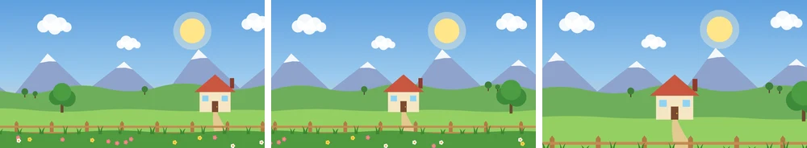
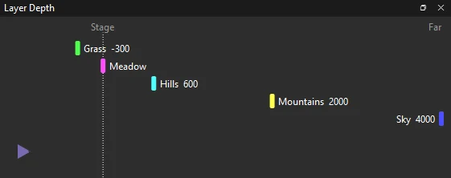
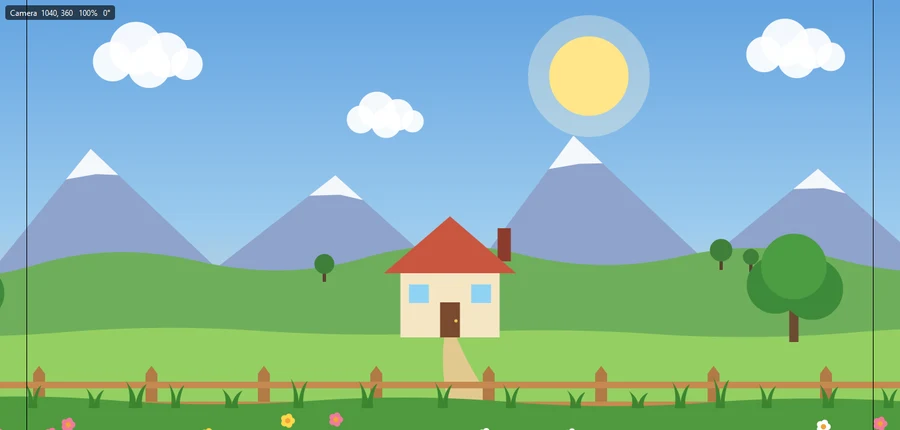
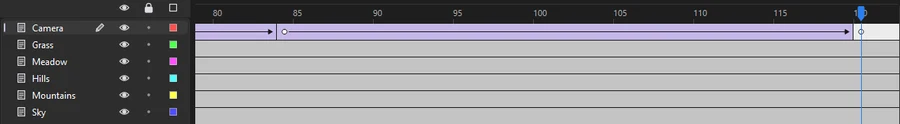

Tutorials
Multiplane camera
Set a landscape's layers at different depths, then pan and move in with Phoenix's camera: near layers slide past faster than far ones.
This page is also a lesson inside Phoenix: choose and start Multiplane camera, and Phoenix points at each control as you go. It takes about 8 minutes.
To follow along here instead, download the starting document, multiplane-camera.fla, and open it with .

When you look out of a moving train, the fence by the track rushes past while the mountains far away hardly move. A multiplane camera gives a cartoon that same feeling of depth.
The scene is a landscape on five layers: Grass in front, the Meadow with the house, the Hills, the Mountains and the Sky. You will put each layer at its own distance from a camera, then move the camera along the valley and in toward the house.
1. Add a camera
Choose . A Camera layer appears at the top of the timeline, running the scene's 144 frames.
Nothing on the stage changes yet: a camera at rest looks at the middle of the stage and shows it as drawn.
2. Open Layer Depth
Choose . It opens as a tab beside the timeline.
The camera is the triangle on the left, looking right. The dotted line marked Stage is the stage's own distance, and Far is at the right edge. Each layer is a colored bar in its own row, and all five sit on the stage line for now.
3. Push the far layers back
Drag the Sky bar all the way to the right, to Far. The number by its name reads 4000: that many pixels behind the stage.
Then drag Mountains right until it reads about 2000. The farther a layer is, the less it moves when the camera pans.
4. The hills and the grass

Drag Hills a little to the right of the stage line, to about 600.
Drag Grass to the left of the stage line, to about -300: a minus depth is in front of the stage, nearer the camera, so it moves more than the stage. Leave Meadow on the stage line, so the house moves just as the camera does.
5. Back to the timeline
The stage still looks as it did: depth only shows once the camera moves. Click the Timeline tab beside Layer Depth to see the frames again.
6. Go to frame 84
Click frame 84 of the Camera layer. The camera will glide from where it is on frame 1 to where you put it here.
7. Pick the Camera tool
Press C, or pick the Camera tool from the Hand tool's slot in the toolbox. The corner of the stage reads Camera 640, 360 100% 0°: the point it looks at, its zoom and its turn.
8. Pan the camera
Drag across the stage from right to left, until the corner reads about 1040, 360. The picture follows your hand, so the camera looks farther right, and the house comes to the middle.
The Camera layer now has a keyframe on frame 84, with a tween arrow from frame 1.

9. Play it
Press Enter, or click the play button in the timeline header. Watch the layers: the fence and grass rush by, the house and meadow go at the camera's pace, the hills lag behind, and the mountains and sun barely move.
10. Go to frame 120
Press Enter again to stop. Click frame 120 of the Camera layer.
11. Move in
Hold Shift and drag up on the stage a little, until the corner reads about 120%. Dragging up moves the camera in; dragging down moves it out.
Near layers grow faster than far ones as the camera moves in: the fence drops toward the bottom edge while the mountains hardly change.

12. Play it again
Press Enter. The camera pans along the valley, then moves in toward the house, and holds there to the end.
13. Look past the camera
Press Enter to stop, then choose to turn it off. The stage shows the layers as drawn, without the camera's moves, which is handy for drawing. Choose it again to look through the camera once more.
What you did
You set five layers at different depths and keyed a camera move with two drags. The camera does the parallax for you: the layers themselves never move.
Each drag with the Camera tool keys the camera on the frame shown, and the camera tweens into it from the keyframe before. Alt-drag turns the camera. Choose with the Camera layer picked to see its pan, zoom and turn as curves.
To change the move, click a keyframe on the Camera layer and drag again; while the Camera tool is in use, the Tool tab of the Properties panel shows that keyframe's X, Y, Zoom and Turn as numbers you can type. films the scene through the camera while Through the camera is checked.
For everything this tutorial touches on, see Multiplane camera and The camera.